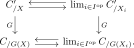
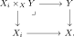
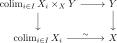
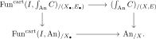

6.11. Topoi of parametrized objects
The Grothendieck construction \(\int_{\An}C\) organizes families of objects of \(C\) parametrized by animae. Its universal property separates arbitrary colimits into anima-indexed colimits and weakly contractible colimits, and this makes the van Kampen condition particularly transparent. The main result characterizes those accessible categories \(C\) for which \(\int_T C\) is a topos for every topos \(T\): these are the loci, the categories whose weakly contractible colimits are van Kampen. This also identifies stable categories and categories of \(\infty\)-connected objects as two manifestations of the same construction. The section is logically independent of the later chapters, but the results provide a useful application of descent and may also be found in [Hoyois 2019].
6.11.1. Categories of \(\An\)-parametrized objects
Let \(C\) be a category, not necessarily small. We define the functor \(\pi\colon \int_{\An}C \to \An\) as the cartesian unstraightening of the functor
We refer to \(\int_{\An}C\) as the category of \(\An\)-parametrized objects of \(C\). Note that an object of \(\int_{\An}C\) is a pair \((A,X)\), where \(A \in \An\) is an anima and \(X\colon A \to C\) is an \(A\)-indexed family of objects of \(C\). A morphism \((A,X) \to (B,Y)\) consists of a morphism of animae \(f\colon A \to B\) and a map \(X \to f^*Y\) in \(\Fun(A,C)\), where \(f^*Y := Y \circ f\colon A \to C\).
The fiber of \(\int_{\An}C\) over \(A \in \An\) is \(\Fun(A,C)\). By taking \(A = *\), we in particular obtain an inclusion \(C \hookrightarrow \int_{\An}C\). Note that this is fully faithful, since \(\{*\} \hookrightarrow \An\) is fully faithful.
While we gave an explicit construction of \(\int_{\An}C\), we will show next that it can also be characterized via the following two universal properties:
For arbitrary \(C\), the category \(\int_{\An}C\) is obtained from \(C\) by freely adding anima-indexed colimits;
If \(C\) admits weakly contractible colimits, then \(\int_{\An}C\) admits all small colimits, the inclusion \(C \hookrightarrow \int_{\An}C\) preserves weakly contractible colimits, and \(\int_{\An}C\) is the free category with a functor from \(C\) satisfying these two properties.
We start with property (a), which is relatively straightforward to prove.
The category \(\int_{\An}C\) admits anima-indexed colimits, and the functor \(\pi\colon \int_{\An}C \to \An\) preserves anima-indexed colimits.
Proof

Let \(D\) be a category admitting anima-indexed colimits. Then the inclusion \(D \hookrightarrow \int_{\An}D\) admits a left adjoint \(\colim \colon \int_{\An} D \to D\), given on objects by sending \((A,X)\) to \(\colim_{a \in A} X_a\).
Proof
Let \(\Cat^{\An\text{-}\colim}\) denote the subcategory of \(\Cat\) consisting of the categories with anima-indexed colimits and functors preserving anima-indexed colimits. Then the construction \(C \mapsto \int_{\An}C\) defines a left adjoint to the inclusion \(\Cat^{\An\text{-}\colim} \hookrightarrow \Cat\), with unit and counit given by the functors
respectively.
Proof

We may now deduce the first claimed universal property of \(\int_{\An}C\):
Let \(C\) and \(D\) be categories and assume that \(D\) admits anima-indexed colimits. Then restriction along \(i\colon C \hookrightarrow \int_{\An}C\) induces an equivalence
Proof
6.11.2. Weakly contractible colimits and free cocompletion
We now move on to the second universal property of \(\int_{\An}C\), which is more subtle; Marc said that he has not seen this formulation in the literature. For the proof, we use the category \(\PSh^{\mathrm{small}}(C)\) of small presheaves on \(C\), i.e. the full subcategory of \(\PSh(C)\) generated by the representable presheaves under small colimits. The inclusion \(C \hookrightarrow \PSh^{\mathrm{small}}(C)\) is the universal functor from \(C\) into a category with small colimits. Recall that \(\PSh^{\mathrm{small}}(C) = \PSh(C)\) whenever \(C\) is small, but not for arbitrary \(C\). The small presheaves may be characterized as those \(\Ff\) for which the category of elements \(\El(\Ff) = C_{/\Ff} \subseteq \PSh(C)_{/\Ff}\) admits a final functor from a small category.
Let \(C\) be a category admitting small weakly contractible colimits.
The inclusion \(C \hookrightarrow \int_{\An}C\) preserves weakly contractible colimits.
The inclusion \(C \hookrightarrow \int_{\An} C\) uniquely extends to a left adjoint \(L\colon \PSh^{\mathrm{small}}(C) \to \int_{\An} C\).
The right adjoint \(R\colon \int_{\An} C \hookrightarrow \PSh^{\mathrm{small}}(C)\) is fully faithful, exhibiting \(\int_{\An}C\) as a Bousfield localization of \(\PSh^{\mathrm{small}}(C)\). In particular, \(\int_{\An} C\) admits small colimits.
For a category \(D\) with small colimits, a colimit-preserving functor \(F\colon \PSh^{\mathrm{small}}(C) \to D\) inverts \(L\)-local maps if and only if its restriction \(C \to D\) preserves weakly contractible colimits.
Proof
- Consider the map \(p\colon I \to \abs{I}\) to the geometric realization of \(I\). We will show that the Kan extension of \(X\) along \(p\) exists in \(\int_{\An}C\). Since \(p\) is a cofinal functor, its relative slices are weakly contractible by Quillen's Theorem A. By part (1), this means that the Kan extension of \(X\) along \(p\) exists in \(C\), and that it is preserved by the inclusion \(C \hookrightarrow \int_{\An}C\).
- The colimit \(\colim_i X_i\) in \(\int_{\An}C\) is now computed as the colimit of the left Kan extension \(p_!X\colon \abs{I} \to \int_{\An}C\), which exists since \(\abs{I}\) is an anima and we established the existence of anima-indexed colimits in Lemma 6.158.
A category \(C\) admits small colimits if and only if it admits anima-indexed colimits and weakly contractible colimits. Similarly, if \(C\) and \(D\) are categories with small colimits, then a functor \(F\colon C \to D\) preserves small colimits if and only if it preserves both anima-indexed colimits and weakly contractible colimits.
Proof
We are now ready to establish the second universal property of \(\int_{\An}C\). To formulate this precisely, let us denote by \(\Cat^{\wccolim}\) the subcategory of \(\Cat\) spanned by the categories admitting weakly contractible colimits and those functors that preserve weakly contractible colimits. Note that it contains the category \(\Cat^{\colim}\) of categories with colimits and colimit-preserving functors.
The adjunction \(\Cat \rightleftarrows \Cat^{\An\text{-}\colim}\) from Lemma 6.160 restricts to an adjunction
In particular, if \(C\) is a category with small weakly contractible colimits and \(D\) is a category with small colimits, then restriction along the inclusion \(C \hookrightarrow \int_{\An}C\) induces an equivalence
Proof
6.11.3. Categories of objects parametrized by topoi
The construction of \(\int_{\An}C\) may be generalized, replacing \(\An\) by an arbitrary topos.
Let \(T\) be a cocomplete category and let \(C\) be a category admitting weakly contractible colimits. We define the category of \(T\)-parametrized objects of \(C\) as the tensor product
in the category \(\Cat^{\colim}\) of cocomplete categories (using that \(\int_{\An}C\) admits colimits by Proposition 6.162).
The functor \(T \times C \hookrightarrow T \times \int_{\An} C \to \int_T C\) is universal among functors \(F\colon T \times C \to D\) into a cocomplete category \(D\) which preserve all colimits in the first variable and weakly contractible colimits in the second variable.
Proof
The projection \(\pi\colon \int_{\An} C \to \An\) preserves all colimits. Indeed, its restriction to \(C\) is the constant functor with value \(*\), which preserves weakly contractible colimits, and its colimit-preserving extension under Proposition 6.164 sends \((A,X)\) to \(\colim_A*=A\). Hence it is precisely \(\pi\). Tensoring with \(T\) in \(\Cat^{\colim}\) gives an analogous functor \(\pi_T\colon \int_TC \to T\). We will now identify the fiber of \(\pi_T\) over \(A \in T\) with the category of \(A\)-parametrized objects of \(C\).
Let \(T\) and \(C\) be presentable categories. Then the functor \(\pi_T\colon \int_T C \to T\) is a bicartesian fibration, which is classified by both of the following functors:
and
Proof sketch
6.11.4. Loci
We now turn to the problem of characterizing when parametrized objects form a topos.
Given a topos \(T\) and a category \(C\), when is the \(T\)-parametrization \(\int_T C\) a topos?
This is interesting because of examples like \(\int_T \Sp = \Exc^1(\An^{\fin}_*,T)\), which is a topos. To answer this, we introduce the concept of a locus.
A locus is an accessible category with pullbacks and van Kampen weakly contractible colimits.
Let \(C\) and \(C'\) be accessible categories with pullbacks and weakly contractible colimits, and let \(G\colon C' \to C\) be a conservative functor which preserves pullbacks and weakly contractible colimits. If \(C\) is a locus, then also \(C'\) is a locus.
Proof

If \(C\) and \(C'\) are loci, and \(F\colon C' \to C\) is accessible and preserves pullbacks and weakly contractible colimits, then also the fibers of \(F\) are loci.
Proof
If \(C\) is a locus, then all slices \(C_{/X}\) and \(C_{X/}\) are loci.
Proof
Let \(C\) be a locus with a final object, and let \(A\) be a small category with finite colimits and a final object. Then the subcategory
of \(n\)-reduced \(m\)-excisive functors is a locus. Indeed, it is the fiber of the functor
For example, we have \(\Exc^{[n,1]}(A,C) = \Exc^n_*(A,C)\).
Every topos is a locus. Conversely, a locus \(T\) is a topos if and only if it admits a strictly initial object.
Proof
Let \(C\) be an accessible category with weakly contractible colimits. If \(C\) is stable, then it is a locus.
Proof


Let \(T\) be a topos. Then \(T^{\geq \infty}\) is a locus in which every map is an effective epimorphism.
Proof
The following is our main theorem of this section:
Let \(C\) be a category with pullbacks and weakly contractible colimits. Then the following conditions are equivalent:
The category \(C\) is a locus;
The category \(\int_{\An} C\) is a topos;
For every topos \(T\), the category \(\int_T C\) is a topos.
Moreover, the following conditions are equivalent to each other:
The category \(C\) is a locus in which every map is an effective epimorphism;
There exists a topos \(T\) such that \(C = T^{\geq \infty}\).
There exists a topos \(T\) such that \(T_{\leq \infty} = \An\) and \(T^{\geq \infty} = C\).
We may think of the categories in (4-6) as “nilpotent thickenings of the point”. They include all stable categories.
Proof

6.11.5. Further questions on relative cocompletions
The category \(\int_{\An}C\) is a special case of a relative free-cocompletion construction \(\Pp^{K'}_K(C)\). This viewpoint explains why anima-indexed and weakly contractible colimits occur together, and suggests a broader question about when relative cocompletions are topoi. We first record the formal statements that follow from the universal properties, then separate the cases presently known from the open ones. Some of this discussion is related to [Rezk 2025].
Let \(K \subseteq K'\) be two classes of small categories. Given a category \(C\) with \(K\)-indexed colimits, we may form a functor
which is universal among \(K\)-colimit preserving functors into a category with \(K'\)-indexed colimits.
Assume for simplicity that \(C\) is small. If \(K'\) consists of all small categories and \(K\) of none, \(\Pp^{\all}(C) = \PSh(C)\) is simply the presheaf category. For arbitrary \(K\) (but still \(K'=\mathrm{all}\)), we may identify \(\Pp^{\all}_K(C)\) with the localization of \(\PSh(C)\) at the class of maps
for every cocomplete category \(D\), a colimit-preserving functor \(\PSh(C)\to D\) is determined by its restriction to \(C\), and it factors through the localization if and only if it inverts each \(\alpha_X\), which is exactly the condition that the restriction preserve \(K\)-indexed colimits.
It follows from Yoneda that we may identify \(\Pp^{\all}_{K}(C)\) with the full subcategory of \(\PSh(C)\) consisting of those presheaves \(F\colon C\catop \to \An\) which send \(K\)-indexed colimits in \(C\) to limits in \(\An\).
Let \(K'\) be the class of all small categories and let \(K\) be the class of the weakly contractible categories. If \(C\) is a category with weakly contractible colimits, the category \(\Pp^{\all}_{\mathrm{wc}}(C)\) is universal among functors \(C \to C'\) into a cocomplete category \(C'\) which preserve weakly contractible colimits. Since this is also precisely the universal property of the category \(\int_{\An} C\) established in Proposition 6.164, we obtain an equivalence
Together with Proposition 6.161, the preceding example gives
Thus freely adjoining anima-indexed colimits is the same as freely adjoining all colimits while preserving the weakly contractible colimits already present in \(C\). This motivates the following terminology.
Let \(K\) and \(K'\) be two classes of small categories. We write \(K \perp K'\), and say that \(K\) is complementary to \(K'\), if for every category \(C\) with \(K'\)-indexed colimits, the categories \(\Pp^K(C)\) and \(\Pp^{\all}_{K'}(C)\) define the same full subcategory of \(\PSh(C)\) (or of the category of small presheaves, if \(C\) is large), under the identifications from Remark 6.180.
Equivalently, the unique \(K\)-colimit-preserving extension
of \(C \to \Pp^{\all}_{K'}(C)\) is an equivalence.
This relation is not symmetric: \(K\) being complementary to \(K'\) does not imply that \(K'\) is complementary to \(K\).
If \(K \perp K'\), then the following two conditions are satisfied:
For every category \(D\), the unique \((K \cup K')\)-colimit-preserving extension \(\Pp^{K \cup K'}(D) \to \Pp^{\all}(D)\) of \(D \to \Pp^{\all}(D)\) is an equivalence. Equivalently, \(\PSh(D)\) is generated by representables under \(K\)-colimits and \(K'\)-colimits.
In \(\An\), \(K\)-indexed colimits commute with \(K'\)-indexed limits.
Proof
The following are examples of complementary classes:
Filtered categories are complementary to finite categories.
Sifted categories are complementary to finite sets.
Weakly contractible categories are complementary to the empty category.
All small categories are complementary to the empty class.
Animae are complementary to weakly contractible categories, by Proposition 6.164.
The question about \(\int_{\An}C\) being a topos now has the following natural generalization:
Let \(K \perp K'\) be complementary and let \(C\) be a category which has \(K'\)-indexed colimits which are van Kampen. Is \(\Pp^K(C) = \Pp^{\all}_{K'}(C)\) necessarily a topos?
Marc says he doesn't know whether this is true in general. But it is true when \(K\) is one of the following classes of categories:
Weakly contractible categories. In this case, \(\Pp^{\mathrm{w.c.}}(C)\) is also known as \(\Pp_{\emptyset}(C)\), the full subcategory of \(\Fun(C\catop,\An)\) spanned by those functors \(F\) satisfying \(F(\emptyset) = *\). It is readily verified that both weakly contractible colimits and the initial object are van Kampen, so that \(\Pp_{\emptyset}(C)\) is a topos.
Sifted categories. In this case, \(\Pp^{\mathrm{sifted}}(C)\) is also known as \(\Pp_{\Sigma}(C)\), the subcategory of \(\Fun(C\catop,\An)\) spanned by the finite-product-preserving functors. This is in fact a sheaf category, hence a topos; see [Bachmann and Hoyois 2021, Lemma 2.4] for a proof.
All categories. In this case, \(\Pp^{\all}(C)\) is also known as the presheaf category \(\PSh(C)\), which is a topos.
All animae. In this case, \(\Pp^{\mathrm{animae}}(C) = \int_{\An}C\), so this is a topos by Theorem 6.177.
It is natural to ask whether the same conclusion holds for \(n\)-groupoids paired with weakly \(n\)-connected indexing categories. We do not record this as an established case. However, it seems to Marc that this is not true when \(K= \{\text{Filtered categories}\}\). You would need to show that if \(C\) is a category with finite colimits which are van Kampen, then \(\Ind(C)\) is a topos. Although Marc does not know an explicit counterexample, he expects this to fail in general.
References
- Marc Hoyois. Topoi of parametrized objects. Theory Appl. Categ., 34, 243–248. 2019.
- Charles Rezk. Free colimit completion in ∞-categories. Homology Homotopy Appl., 27 (1), 275–292. 2025.
- Tom Bachmann, Marc Hoyois. Norms in motivic homotopy theory. Astérisque 425, Paris: Société Mathématique de France (SMF). 2021.